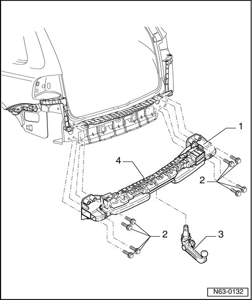

Trailer Hitch, Assembly Overview
Rear Bumper
Trailer Hitch, Assembly Overview
• The tightening specifications only apply to factory-installed trailer hitches.
• Obtain tightening specifications of other tow hitches from corresponding manufacturer.
• Information for the electrical system can be found under.

1 Tow hitch carrier
• The tow hitch with removable ball head is illustrated.
• Remove bumper cover.
2 Bolt
• Quantity: 8
• 100 Nm + 90° additional turn
• Always replace bolts after loosening them.
3 Ball head
• The removable ball head is located in a separate transport box below the foldable luggage compartment floor.
4 Foam piece